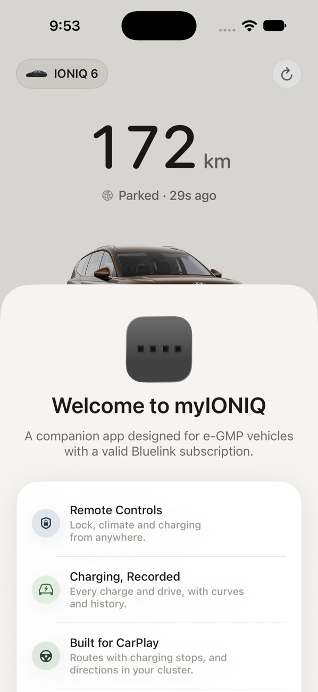
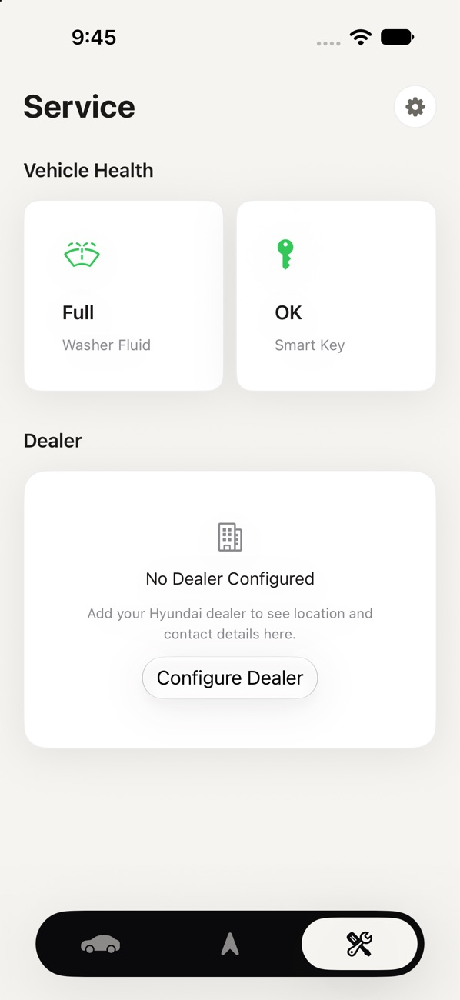

Getting Started
Requirements, joining TestFlight and setup.
Requirements
- An iPhone on iOS 27 or later.
- A Hyundai or Kia e-GMP EV (IONIQ 5, IONIQ 6, EV6 and their siblings) with an active Bluelink subscription.
- The TestFlight app from the App Store.
- Optional: a Bluetooth LE OBD-II adapter for CarPlay and live charging, and the harness adapter for preconditioning and cluster directions.
Joining TestFlight
Early access opens on TestFlight in small waves. Testers join either through an email invitation or a public link with a limited number of places.
- Install TestFlight from the App Store.
- Open the invitation email or the public link on your iPhone and tap Accept or Start Testing.
- Install myIONIQ from TestFlight. New builds appear there automatically.
Setup
A short onboarding flow walks you through each piece. Anything you skip waits for you in Settings, which is the gear at the top of the Service tab.


- Bluelink. Sign in with your Bluelink email, password and PIN. They're stored in your iPhone's Keychain and only ever sent to Bluelink.
- Vehicle Colour. Pick your paint so the car on the home screen matches yours.
- OBD-II Adapter. Pair it now if it's plugged in and the car is on, or later from Settings › OBD Adapter.
- Preconditioning Adapter. Pair the harness adapter, and choose whether to precondition automatically on DC-fast routes and show directions in the cluster.
- Home & Work. Used for commute times, charging plans and CarPlay suggestions.
- CarPlay. Turn on Favourite Routes, destination suggestions and trip recording.
Commands
Lock, unlock, climate, charging, horn and lights go through Bluelink and ask for Face ID first, falling back to your passcode. Bluelink delivers commands to the car over its cellular connection, so they can take anywhere from a few seconds to a minute.
If Bluelink reports the car is busy, or your phone is offline, the command is queued and sent again automatically once it can get through.
Demo Mode
On the Bluelink sign-in screen, tap the line "Your credentials are stored in your iPhone's Keychain and never shared" ten times. myIONIQ loads a demo vehicle so you can look around without an account. Commands in demo mode don't reach a real car.